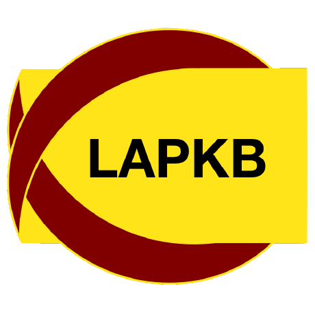

Data Meets Design
Elegant Scientific Analysis and Reports with LLMs, Quarto & R. View the complete schedule of sessions, exercises and faculty.

IATDMCT 2026 · Workshop
https://lapkb.github.io/iatdmct-workshop
Materials for the IATDMCT 2026 workshop. The exercises are below, along with the cheat sheet, the data file and the Quarto sources.
Elegant Scientific Analysis and Reports with LLMs, Quarto & R. View the complete schedule of sessions, exercises and faculty.
Do this one in Positron. Create an R project called TryQuarto, add a
Theoph.qmd document, and work through the tasks: chunk options, tidyverse
code and a linear model. The answers are in the reveal boxes.
Write a .qmd file that renders like the target PDF. It needs numbered
sections, a labelled equation, a figure and a table, each one referred to with a
cross-reference.
Markdown syntax, Quarto structure, chunk options, cross-references and equations. Everything is written in the syntax it describes, so you can copy it.
Input for the reproduce exercise: one intravenous vancomycin dose, with concentrations measured over time.
The R code exercise runs in Positron and uses the tidyverse and
flextable packages. Rendering a PDF also needs a LaTeX install.
Each PDF is rendered from a .qmd file. Open one in Positron or RStudio and
render it with quarto render.
The repository also has the figure script, the bibliography and the rendered output.